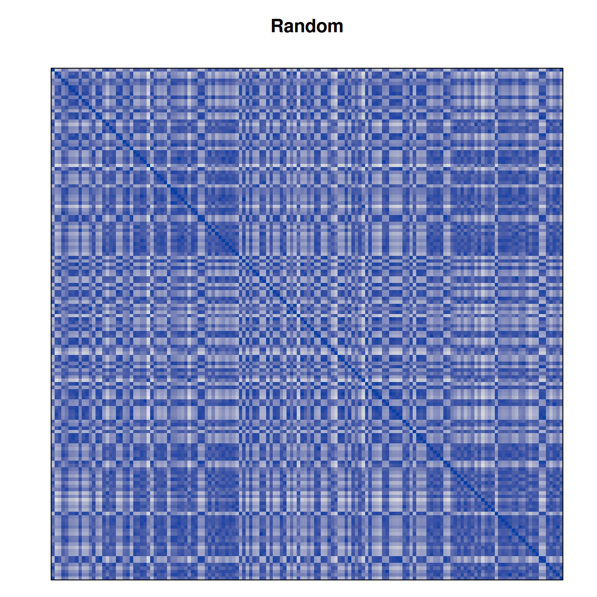

library("seriation")
data("iris")
x <- as.matrix(iris[sample(nrow(iris)), -5])
d <- dist(x)A Comparison of Seriation Methods
Introduction
This document compares the seriation methods available in the package seriation using the popular Iris dataset and randomizes the order of the objects.
Distance seriation
We first register more seriation methods. Some of these methods require installing additional packages.
register_DendSer()
register_optics()
register_smacof()The following methods will be used (a few slow methods are skipped).
methods <- sort(list_seriation_methods("dist"))
# skip slow methods
methods <- setdiff(methods, c("BBURCG", "BBWRCG", "Enumerate", "GSA"))
methods [1] "ARSA" "DendSer" "DendSer_ARc" "DendSer_BAR"
[5] "DendSer_LPL" "DendSer_PL" "GW" "GW_average"
[9] "GW_complete" "GW_single" "GW_ward" "HC"
[13] "HC_average" "HC_complete" "HC_single" "HC_ward"
[17] "Identity" "isomap" "isoMDS" "MDS"
[21] "MDS_angle" "MDS_smacof" "metaMDS" "monoMDS"
[25] "OLO" "OLO_average" "OLO_complete" "OLO_single"
[29] "OLO_ward" "optics" "QAP_2SUM" "QAP_BAR"
[33] "QAP_Inertia" "QAP_LS" "R2E" "Random"
[37] "Reverse" "Sammon_mapping" "SGD" "SGLS"
[41] "Spectral" "Spectral_norm" "SPIN_NH" "SPIN_STS"
[45] "TSP" "VAT" Details about the method can be found in the manual page for seriate().
We use a loop to run the function seriate() with each method and calculate criterion measures which indicate how good the order is.
orders <- list()
criterion <- list()
for (m in methods) {
cat(m)
tm <- system.time(orders[[m]] <- seriate(d, method = m))
criterion[[m]] <- data.frame(time = tm[1]+tm[2], rbind(criterion(d, orders[[m]])))
cat(" took", tm[1]+tm[2], "sec.\n")
}ARSA took 0.734 sec.
DendSer took 1.351 sec.
DendSer_ARc took 1.074 sec.
DendSer_BAR took 1.205 sec.
DendSer_LPL took 1.682 sec.
DendSer_PL took 2.329 sec.
GW took 0.233 sec.
GW_average took 0.203 sec.
GW_complete took 0.196 sec.
GW_single took 0.193 sec.
GW_ward took 0.194 sec.
HC took 0.187 sec.
HC_average took 0.216 sec.
HC_complete took 0.203 sec.
HC_single took 0.193 sec.
HC_ward took 0.198 sec.
Identity took 0.199 sec.
isomapRegistered S3 method overwritten by 'vegan':
method from
reorder.hclust gclusWarning in e$value: partial match of 'value' to 'values' took 0.457 sec.
isoMDS took 1.367 sec.
MDS took 0.485 sec.
MDS_angle took 0.312 sec.
MDS_smacof took 5.632 sec.
metaMDS took 1.861 sec.
monoMDS took 0.225 sec.
OLO took 0.191 sec.
OLO_average took 0.219 sec.
OLO_complete took 0.194 sec.
OLO_single took 0.189 sec.
OLO_ward took 0.19 sec.
optics took 0.223 sec.
QAP_2SUM took 0.236 sec.
QAP_BAR took 0.233 sec.
QAP_Inertia took 0.237 sec.
QAP_LS took 0.228 sec.
R2E took 0.281 sec.
Random took 0.194 sec.
Reverse took 0.192 sec.
Sammon_mapping took 0.493 sec.
SGDWarning: Method "SGD" is deprecated; use "SGLS" instead. took 62.297 sec.
SGLS took 62.992 sec.
Spectral took 0.257 sec.
Spectral_norm took 0.668 sec.
SPIN_NH took 22.226 sec.
SPIN_STS took 33.046 sec.
TSP took 0.24 sec.
VAT took 0.237 sec.criterion <- do.call(rbind, criterion)We align the seriation orders. The reason is that an order 1, 2, 3 and 3, 2, 1 are equivalent and just an artifact of the algorithm. Aligning will reverse some orders so they are better aligned. Then we sort the orders from best to worst according to a popular seriation criterion measure called Gradient_weighted.
orders <- ser_align(orders)
best_to_worse <- order(criterion[["Gradient_weighted"]], decreasing = TRUE)
orders <- orders[best_to_worse]
criterion <- criterion[best_to_worse, ]Comparison between methods
We can compare the seriation methods by how similar the orders are that they produce (measured using Spearman). The following code calculates distances between orders and then performs hierarchical clustering.
dst <- ser_dist(orders)
hc <- permute(hclust(dst), order = "OLO", dist = dst)
plot(hc)
The reordered dendrogram clearly shows a group of methods based on hierarchical clustering focused on path length and another group that tries to optimize the other seriation measures.
Here is a table to compare the seriation methods on different criterion measures. Use the interactive table to sort the methods given different measures. Note that some are maximized and some should be minimized. Details about the measures can be found in the manual page for criterion().
library(DT)
datatable(round(criterion, 2), extensions = "FixedColumns",
options = list(paging = TRUE, searching = TRUE, info = FALSE,
sort = TRUE, scrollX = TRUE, fixedColumns = list(leftColumns = 1))) %>%
formatRound(columns = colnames(criterion) , mark = "", digits=1)Visualize the results
Plot the reordered dissimilarity matrices. Dark blocks along the main diagonal mean that the order reveals a “cluster” of similar objects. The Iris dataset contains three species, but two of them are very similar, so we expect to see one smaller block and one larger block.
for (n in names(orders))
pimage(d, orders[[n]], main = n , key = FALSE)



Matrix seriation
Matrix seriation reorders rows and columns of a data matrix. We perform the same steps as for distances in the previous section.
methods <- sort(list_seriation_methods("matrix"))
# AOE if for correlation matrices only
methods <- setdiff(methods, c("AOE"))
methods [1] "BEA" "BEA_TSP" "BK_unconstrained" "CA"
[5] "Heatmap" "Identity" "LLE" "Mean"
[9] "PCA" "PCA_angle" "Random" "Reverse" Performing seriation.
orders <- list()
criterion <- list()
for (m in methods) {
cat(m)
tm <- system.time(orders[[m]] <- seriate(x, method = m))
criterion[[m]] <- data.frame(time = tm[1]+tm[2], rbind(criterion(x, orders[[m]])))
cat(" took", tm[1]+tm[2], "sec.\n")
}BEA took 0.552 sec.
BEA_TSP took 0.545 sec.
BK_unconstrained took 0.178 sec.
CA took 0.193 sec.
Heatmap took 0.533 sec.
Identity took 0.173 sec.
LLE took 0.611 sec.
Mean took 0.19 sec.
PCA took 0.191 sec.
PCA_angle took 0.206 sec.
Random took 0.18 sec.
Reverse took 0.184 sec.criterion <- do.call(rbind, criterion)Comparison between methods
datatable(round(criterion, 2), extensions = "FixedColumns",
options = list(paging = TRUE, searching = TRUE, info = FALSE,
sort = TRUE, scrollX = TRUE, fixedColumns = list(leftColumns = 1))) %>%
formatRound(columns = colnames(criterion) , mark = "", digits = 1)Visualize the results
best_to_worse <- order(criterion[["Moore_stress"]], decreasing = FALSE)
orders <- orders[best_to_worse]
criterion <- criterion[best_to_worse, ]for (n in names(orders))
pimage(x, orders[[n]], main = n , key = FALSE)